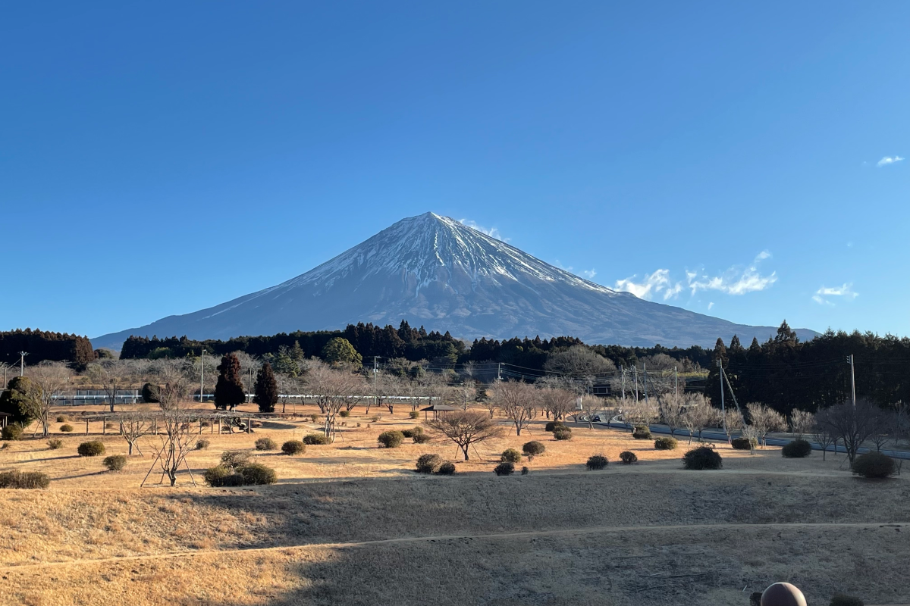
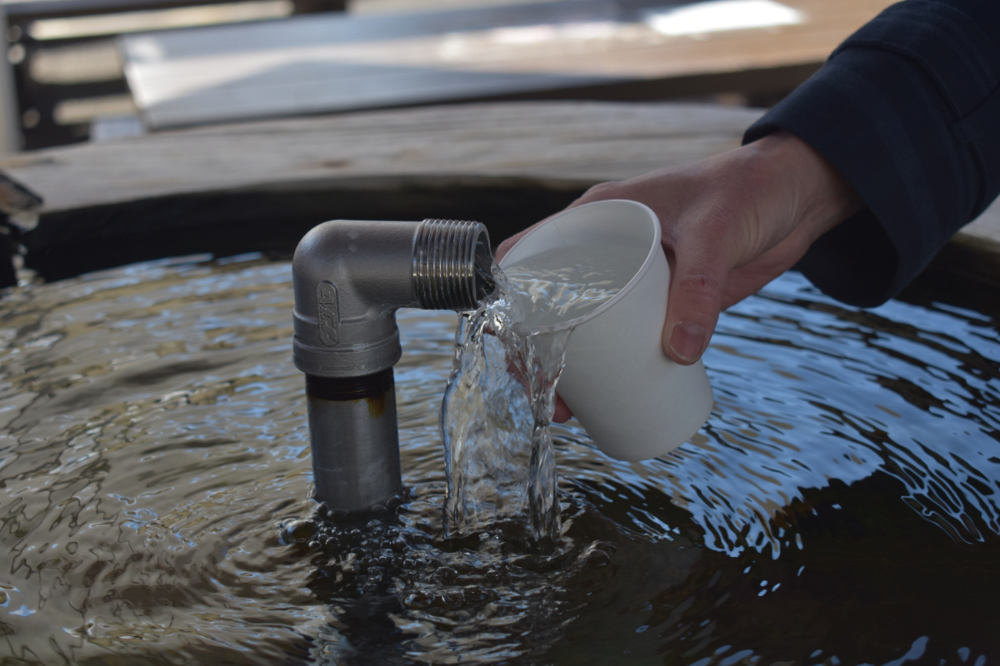
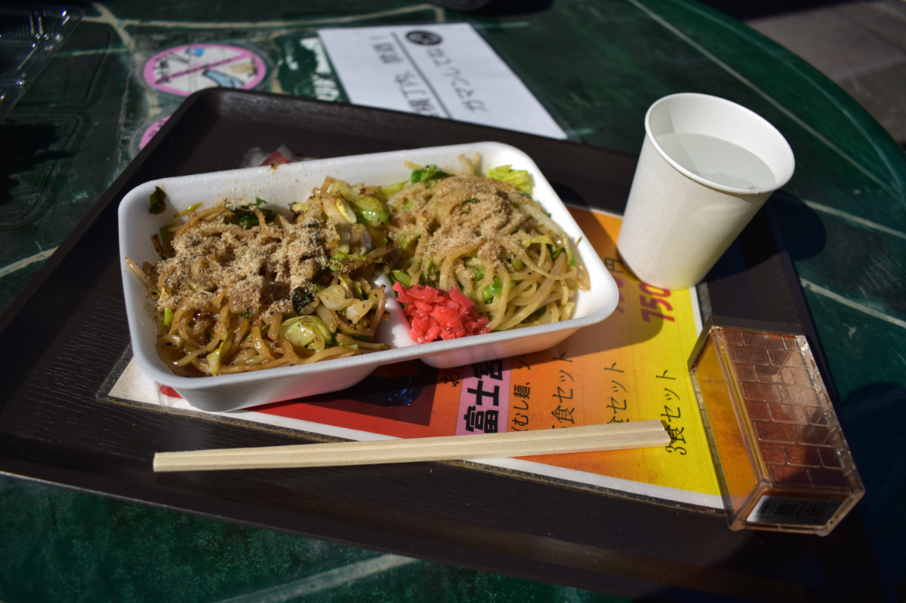
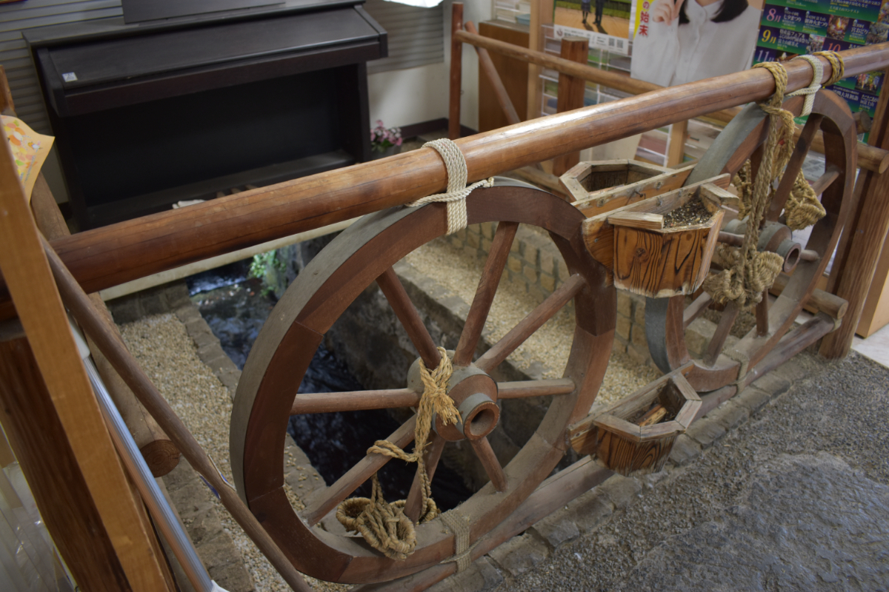
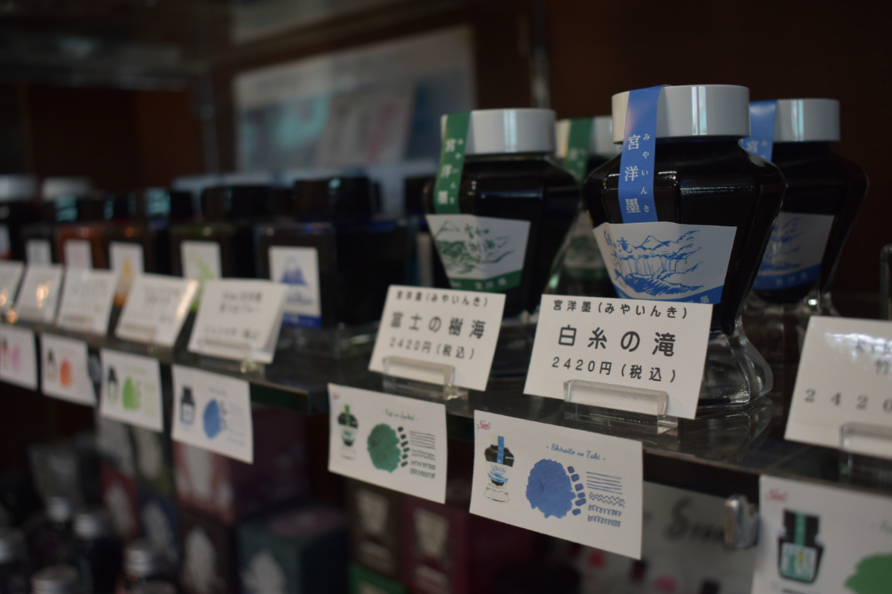
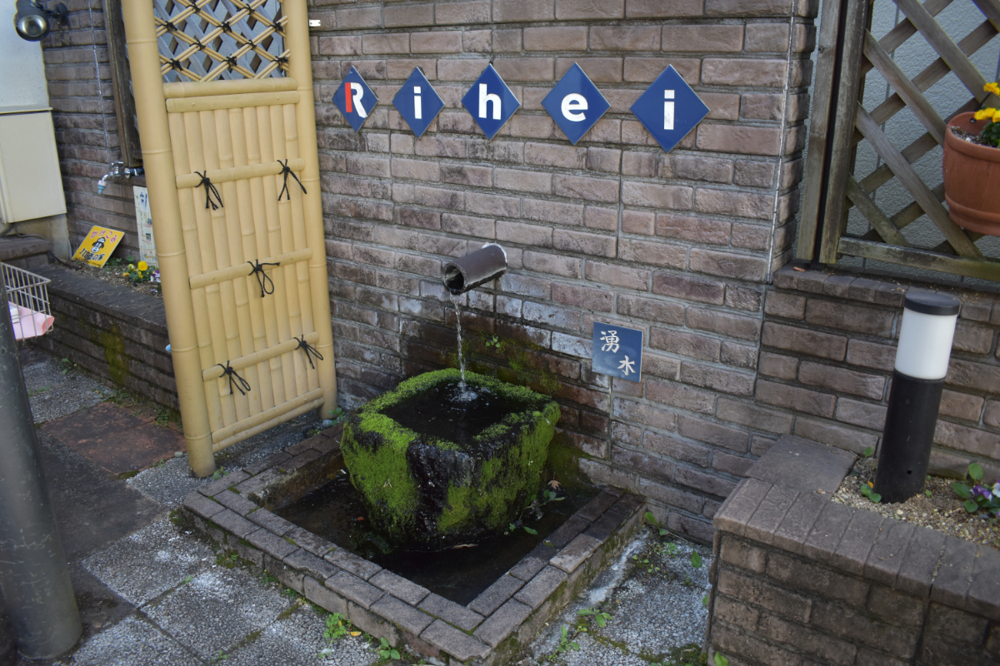

みずとであう -02
ゆらり、さらり、水は行く。温もり溢れるあの町へ

▲ 大石寺近くから撮影した富士山。4月は芝桜が広がる。
"宮町"。ー富士宮の中央の商店街や施設のぬくもりを、富士宮の人々はこう呼びます。
写真ホバーまたはタップで説明文が表示されます。

『お宮横丁』 宮町の中でも特に賑わう場所。外国人の方も多く訪れる商店街の中心にも、富士山の湧水が常に流れています。

『お宮横丁ー湧水』 お宮横丁の湧水は、そのまま飲むことができます。紙コップでひとすくい、年中ほぼ一定の丁度良い温度の水を飲むことができます。

『富士宮焼きそば』 湧水を存分に使用したもちもち焼きそば。全店舗味が違うので、食べ比べてみてはいかが？（写真はむすびやのハーフ＆ハーフ）

『Rihei』 宮町の文具店。なんと店内にも川が流れています。昔橋として掛かっていた石をそのまま残しているのだとか。アヒルもいますよ。

『Rihei』 富士宮をテーマにしたオリジナルインク「宮洋墨（みやいんき）」。少し変わった旅のお土産にもぴったり。
